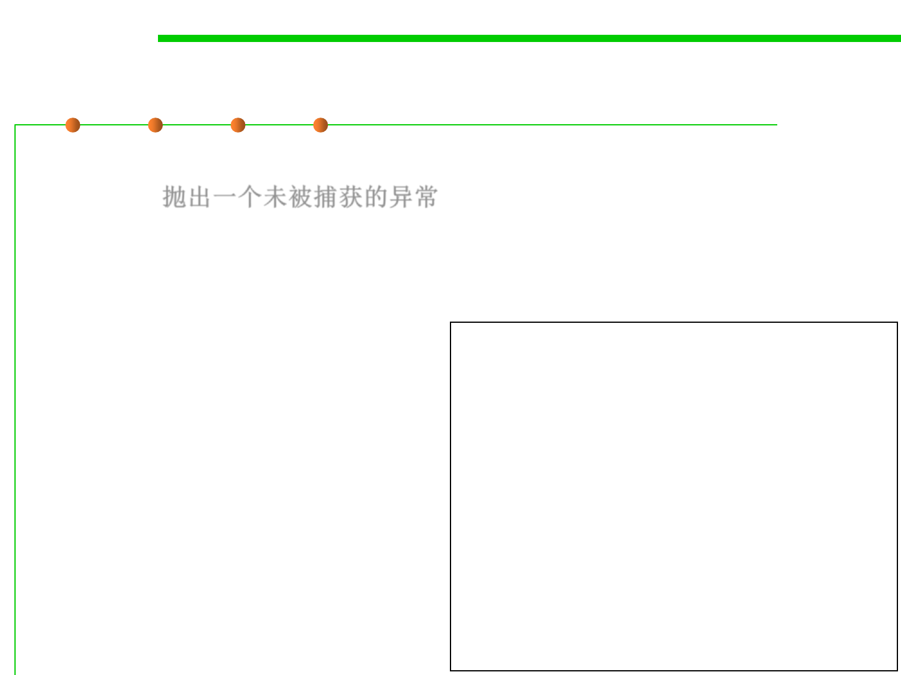

Try-Catch-Finally: case 4
7.2 Error and Exception Handling
▪ Case4: The code throws an exception that is not caught in any catch
clause. 抛出一个未被捕获的异常
– Here, the program executes all code in the try block until the exception is
thrown.
– The remaining code in the try block is skipped.
– Then, the code in the finally
clause is executed, and the
exception is thrown back to the
caller of this method.
– Execution passes through points
1 and 5 only.
InputStream in = new FileInputStream(. . .);
try {
// 1
code that might throw exceptions
// 2
}
catch (IOException e) {
// 3
show error message
// 4
}
Finally {
// 5
in.close();
}
// 6